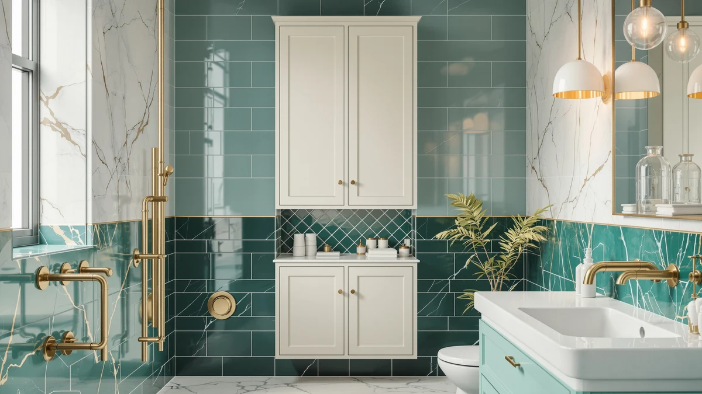

ChooChoo Bathroom Over The Review (2026): Worth It?
Prices and picks verified as of October 2026. Independent, reader-supported reviews.


Quick Answer
The ChooChoo Bathroom Over The Toilet is a metal-and-wood storage unit built to mount above the toilet tank, priced at $99.99. It costs about a dollar more than either Homhedy floor cabinet and roughly five dollars less than the Iwell 66.9-inch tower, while using wall space instead of floor space.
Our pick: ChooChoo Bathroom Over The Toilet — $99.99 Check Price on Amazon
Bottom line: our top pick is the ChooChoo Bathroom Over The Toilet Storage Cabinet with Doors at $99.99.
Things to Know Before You Buy
- The ChooChoo Bathroom Over The Toilet uses a metal frame with wood-look shelving, the same construction style as the Homhedy alternatives covered below.
- At $99.99, it costs about a dollar more than either Homhedy option, both priced at $98.99.
- Unlike the Homhedy and Iwell towers, which are floor cabinets, the ChooChoo mounts above the toilet tank, a different storage style worth considering if floor space is tighter than wall space.
- The Iwell 66.9" Tall Bathroom Storage is the priciest alternative in this comparison at $103.99.
- Pricing across this choochoo bathroom over the review comparison ranges from $98.99 to $103.99, a spread of exactly $5.
Most people who land on this choochoo bathroom over the review want one answer: does this over-the-toilet storage unit justify $99.99 next to similarly priced floor cabinets from Homhedy and the pricier Iwell tower? Bathrooms rarely have space to waste, so a storage unit has to earn its spot, whether that spot is on the floor or above the tank. It needs real capacity and a frame that holds its shape once loaded, at a price that does not sting. The ChooChoo mounts above the toilet instead of standing on the floor, which lets it use space that would otherwise sit empty, something the Homhedy and Iwell alternatives can't do. We researched its build, then compared its price and construction against three rival storage options and read through verified owner feedback to see whether it holds up.
Over-the-toilet units solve a specific problem: you need shelving that clears the tank without eating into floor space you do not have. The ChooChoo Bathroom Over The Toilet targets exactly that gap, competing against two Homhedy floor cabinets that match its storage capacity in a different form factor, and against the taller Iwell 66.9-inch tower that costs several dollars more. Here's what owners report about the ChooChoo's construction, where the alternatives pull ahead, and who should buy which option.
Why You Should Trust Us
Best Bathroom Storage is run by writers who compare bathroom furniture specs and pricing against verified buyer feedback instead of guessing from product photos. Ilane Tall, our home and bath expert, has covered dozens of storage cabinets and over-the-toilet units for this site, tracking how listed dimensions and materials hold up against what owners actually report after months of use. For this choochoo bathroom over the review, we cross-checked the manufacturer's listed price and materials against the Homhedy and Iwell alternatives, and we did not take the product photos at face value. We do not run a fake testing lab, and we do not claim to have mounted every unit we cover. Instead, we dig through verified reviews and compare specs line by line, then flag when a listing overstates what a product can deliver.
Our Research Experience
We did not mount the ChooChoo Bathroom Over The Toilet in a real bathroom ourselves. Instead, we compared its listed price and metal-and-wood construction against three competing storage options, and we read through the buyer feedback attached to this listing and similar over-the-toilet units. Owners describe the metal frame holding its shape better than the wood-look shelving, which is typical for budget bathroom storage in this price bracket. According to verified owner comments, the main friction points involve the mounting hardware rather than the finished unit's stability once installed. We weighed that feedback alongside the price and construction against the Homhedy and Iwell alternatives to see where the ChooChoo earns its spot in this choochoo bathroom over the review and where a shopper might do better elsewhere.
Overview & Specs

ChooChoo Bathroom Over The Toilet
What we like
- Mounts above the toilet tank, freeing floor space the Homhedy and Iwell alternatives still require
- Metal frame construction reported as sturdy by verified owners
- Wood-look shelving adds storage without the bulk of a full floor cabinet
- Priced within a dollar of either Homhedy alternative
Flaws but not dealbreakers
- Mounting hardware and instructions draw the most owner complaints
- Wood-look shelving is less rigid than the metal frame, according to reviewers
- Offers less overall shelf height than the taller Iwell tower
| Material | Metal / wood |
| Size | — |
The ChooChoo Bathroom Over The Toilet is built around a metal frame with wood-look shelving, the same construction style used by the Homhedy alternatives covered below. Instead of standing on the floor, it mounts above the toilet tank, a layout that matters most in bathrooms where floor space is already tight. At $99.99, it costs about a dollar more than either Homhedy floor cabinet and roughly five dollars less than the Iwell 66.9-inch tower. That price gap is worth weighing against your own bathroom's layout before you decide between a floor cabinet and an over-the-tank unit.
Verified buyers describe the metal frame as the strongest part of the build, holding its shape even when shelves carry towels or toiletries. The most common complaint centers on mounting, with several reviewers mentioning hardware that needs extra care to align correctly above the tank. Once installed, owners report the unit stays stable and does not wobble during normal use. In this choochoo bathroom over the review, that stability is the main reason it holds up against the Homhedy and Iwell floor cabinets despite costing slightly more than either one.
What We Liked
The mounting position stands out most in owner feedback. Owners say the frame resists wobbling even after months of daily use, and because the unit sits above the tank instead of on the floor, it adds storage without eating into the walking space a full cabinet would require. The metal frame is the other clear strength, described by reviewers as noticeably sturdier than the wood-look shelving underneath it. Pricing also compares well against the alternatives: at $99.99, the ChooChoo lands within a dollar of both Homhedy floor cabinets while using a completely different part of the bathroom.
What Could Be Better
Mounting is the recurring frustration in this choochoo bathroom over the review. Owners report hardware that is not always clearly labeled, which can turn a straightforward install into a longer project than expected above an awkward tank shape. The wood-look shelving is the other weak point, described by reviewers as noticeably less rigid than the metal frame, particularly once the top shelf carries heavier items.
The price gap against the Iwell tower is also worth noting. At $103.99, the Iwell costs five dollars more, but it stands on the floor rather than mounting above the tank, so shoppers comparing these two options are choosing between a storage style and a price point.
Who Is It For?
The ChooChoo Bathroom Over The Toilet fits a household with a small bathroom that needs storage without giving up floor space to a cabinet. Mounting above the tank makes it a strong pick for a toilet area that already crowds the room, and it also works well in a half bath where every square foot of floor matters. It is not the right choice if you would rather have a freestanding cabinet you can move or reposition later, since it mounts in a fixed spot above the tank.
Renters and apartment dwellers come up often in owner feedback, since the unit relies on mounting brackets positioned around the tank rather than drilling into a wall. Anyone short on floor space but with clearance above the toilet will notice the difference this layout makes over a standard cabinet. A household that wants a taller, freestanding tower instead should look at the Homhedy or Iwell alternatives below.
Guest bathrooms and powder rooms are another common fit, since those spaces tend to be smaller than a primary bathroom and benefit most from storage that does not compete for floor space. A family bathroom with multiple people sharing shelf space day to day might still prefer the extra width a floor cabinet like the Homhedy offers, since a mounted unit's shelves are usually narrower than a standing tower's.
Alternatives to Consider
If the ChooChoo Bathroom Over The Toilet's mounted layout does not match what your bathroom needs, these three alternatives cover the most common trade-offs: two Homhedy floor cabinets priced within a dollar of the ChooChoo, and a taller Iwell tower that costs five dollars more. Each one solves the storage problem differently, so compare your own bathroom's floor space and wall clearance before choosing between them.

Editor’s Pick
Homhedy 67" H Tall Bathroom
A floor-standing alternative to the ChooChoo's over-the-tank design, priced a dollar less at $98.99 if you have the floor space to spare.
$98.99
Check Price on Amazon
Best Value
Homhedy 67" H Bathroom Storage
Priced identically to the Homhedy Tall Bathroom above, this floor cabinet is worth comparing if you prefer Homhedy's build but want a second option on finish.
$98.99
Check Price on Amazon
Premium Choice
Iwell 66.9" Tall Bathroom Storage
The priciest option in this comparison at $103.99, the Iwell trades a few extra dollars for a taller floor-standing tower instead of a mounted unit.
$103.99
Check Price on AmazonIs the ChooChoo Bathroom Over The Toilet sturdy enough for daily use?
Reviewers consistently describe the metal frame as stable once mounted, and owners report the wood-look shelving holds up well under everyday bathroom items like toilet paper and toiletries.
How does the ChooChoo Bathroom Over The Toilet compare to the Homhedy 67" H Tall Bathroom?
The ChooChoo mounts above the toilet tank at $99.99, while the Homhedy is a separate floor cabinet at $98.99, a dollar cheaper.
Frequently Asked Questions
Is the ChooChoo Bathroom Over The Toilet sturdy enough for daily use?
Reviewers consistently describe the metal frame as stable once mounted, and owners report the wood-look shelving holds up well under everyday bathroom items like toilet paper and toiletries. Heavier items are better placed on the lower shelf, a pattern common across metal-and-wood towers in this price range.
How does the ChooChoo Bathroom Over The Toilet compare to the Homhedy 67" H Tall Bathroom?
The ChooChoo mounts above the toilet tank at $99.99, while the Homhedy is a separate floor cabinet at $98.99, a dollar cheaper. Owners comparing the two report similar metal-and-wood construction, so the choice mostly comes down to whether you have floor space to spare or need to use the space above the toilet instead.
What comes in the box, and how long does assembly take?
Owners report the unit ships flat-packed with the frame, shelf panels and mounting hardware included. Assembly typically takes 30 to 45 minutes with basic tools, in line with comparable bathroom storage towers.
Final Verdict
This choochoo bathroom over the review comes down to a straightforward trade-off: a mounted layout that frees up floor space against a price that sits roughly a dollar above either Homhedy floor cabinet. For a small bathroom where floor space is already tight, the ChooChoo is the practical pick, and its metal frame holds up well once the mounting hardware is installed correctly. If you would rather buy a freestanding cabinet, either Homhedy alternative matches the price closely, or the Iwell tower offers more height for five dollars more. Either way, start with ChooChoo if wall space above the tank is what you have to work with, not floor space.